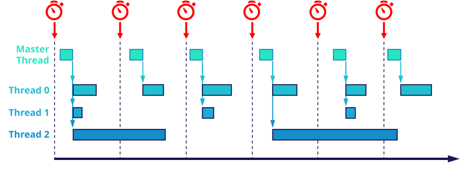
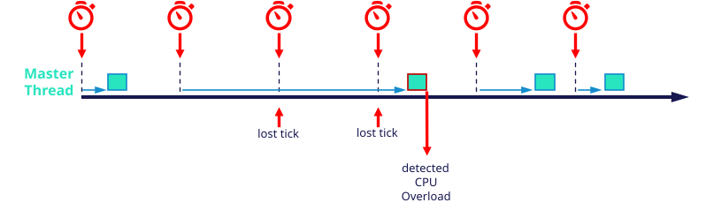
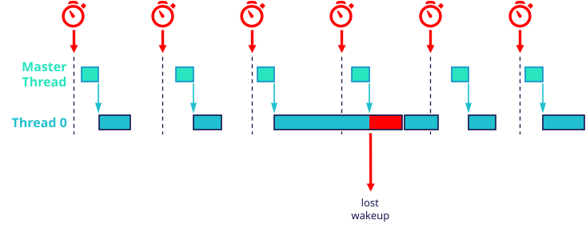
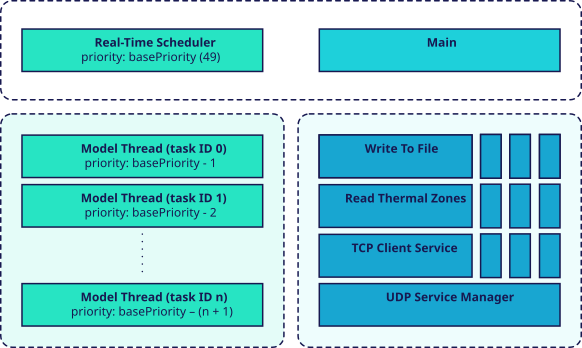

Timing and Scheduling
The Generic Target Toolbox provides several blocks for determining the current time. System clock times are obtained from the operating system, whose clock can in turn be synchronized via an NTP or PTP server. In addition to the system clock, target-related time values can be determined, such as the Model Execution Time. Furthermore, the timing status of the target application can be monitored. This includes Task Execution Time, Task Overloads, and CPU Overloads.
The target application is multi-threaded. Each sample rate, or periodic partition, in the Simulink model corresponds to a separate worker thread. These threads are scheduled to run in parallel; at any given moment, the number of threads that actually execute concurrently is bounded by the number of available CPU cores, and the operating system decides which threads run when.
A hardware timer generates periodic events with a period equal to the base sample time of the Simulink model. A master thread receives these timer events and distributes them to the worker threads in a timely manner. Worker threads are triggered only at integer multiples of the base sample time. As soon as a worker thread receives the trigger from the master thread, it executes the corresponding function from the generated code.

The master thread runs with the highest priority and receives the timer events. Because of the operating system, a small latency (typically in the microsecond range) elapses before the master thread regains control and can react to a timer event. This latency is not constant.
CPU Overload
The high-priority scheduler thread waits for the periodic timer events that are generated with the base sample time of the model. Because of operating-system-related latency, the thread cannot handle an event immediately but only after a short delay. If the timer produces multiple events that the thread cannot handle in time, a lost tick occurs. In this case, the CPU overload counter is incremented by one and the lost tick counter by the number of missed events. Both counters can be read with the CPU Overloads block.

Task Overload
The master thread triggers each worker thread at its scheduled time. If a worker thread is still executing its
step() call when the next trigger arrives, it misses the event and a lost wakeup
occurs: the worker thread loses one time step and is triggered again only with the next event from the master
thread. If several wakeups are lost during a single step calculation, the corresponding number of step calls is
missing. The master thread detects all lost wakeups, which are counted as task overloads and can be read with
the Task Overloads block.

Scheduling Policy: FIFO
The number of threads that can execute simultaneously is bounded by the number of CPU cores. This does not mean that a 4-core system is limited to four different sample rates; it only means that at most four threads run truly in parallel at any instant.
The Generic Target application runs all of its real-time threads with the SCHED_FIFO scheduling policy. Ready threads of the same priority are processed strictly in first-in, first-out order without preemption, and a higher-priority thread always runs before a lower-priority one.
Thread Overview
Two threads are always present: the Real-Time Scheduler and the main thread. A UDP service manager thread runs in addition if UDP blocks are used, and a TCP client service thread runs for each TCP client socket if TCP blocks are used. Additional background threads run if Write To File and Read Thermal Zones blocks are used.

The Real-Time Scheduler thread runs with a high priority, that is fixed to
basePriority = 49. It waits for the timer events that are generated periodically with the base
sample rate and distributes each event to all worker threads of the model.
The main thread executes the
main entry function of the application. The initialization and
termination phases of the Generic Target application run in this thread. In the
main loop, the thread simply waits for a termination signal such as
SIGINT or SIGTERM, which interrupts the loop.
The UDP service manager thread is a non-realtime background thread that is responsible for binding the ports and device names for all UDP sockets. As long as the network interface is not available, it attempts to bind the port and device name with paused delays of 100 milliseconds. Once all ports have been bound, this thread is terminated.
The number of additional threads depends on the Simulink model: for each sample rate or periodic partition, one
real-time worker thread is added. The priority of a worker thread depends on its sample rate — the smaller the sample
time, the higher the priority. For a task ID n = 0 ... N, where 0 belongs to the task
with the smallest sample time, the priority is calculated as
basePriority - (n + 1).
One additional background thread is added for each Write To File block and for each Read Thermal Zones block. They run without a real-time priority.
For each TCP client socket (unique TCP port), a dedicated non-realtime TCP client service thread runs in the background. This thread is responsible for the entire connection lifecycle: socket initialization, port binding, establishing the TCP connection to the remote server, and automatic reconnection attempts. If no connection is established, a reconnection is attempted repeatedly after a pause of 100 milliseconds.